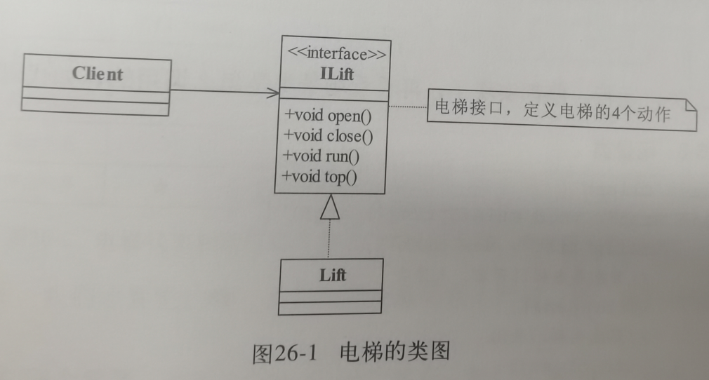
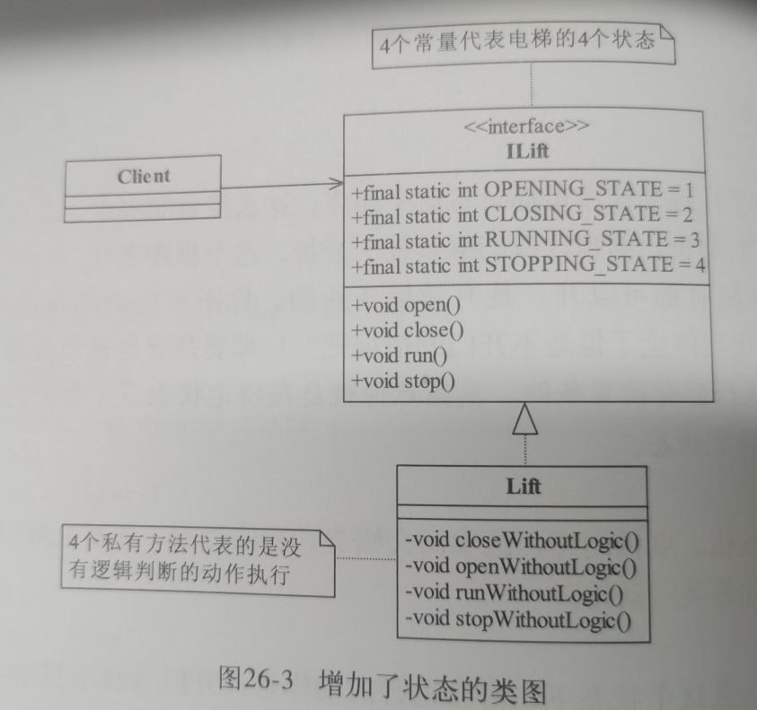
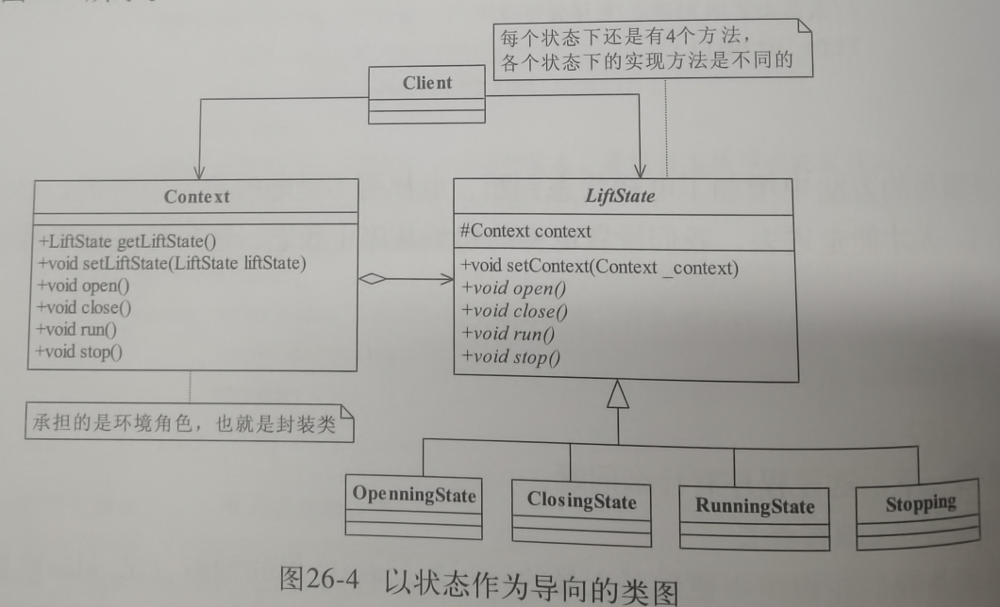
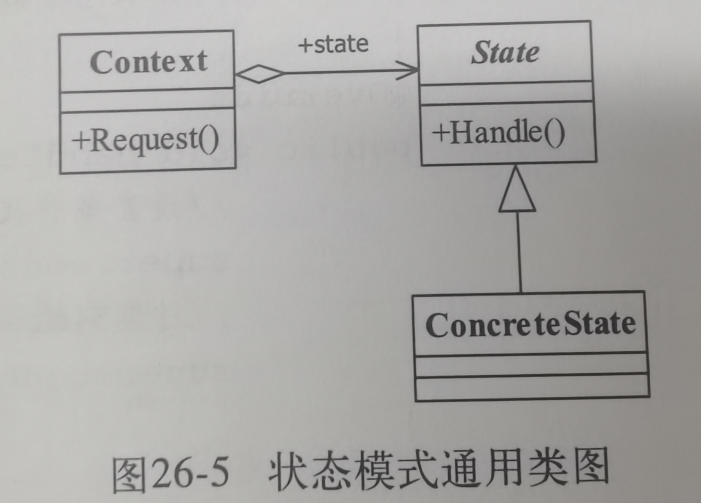
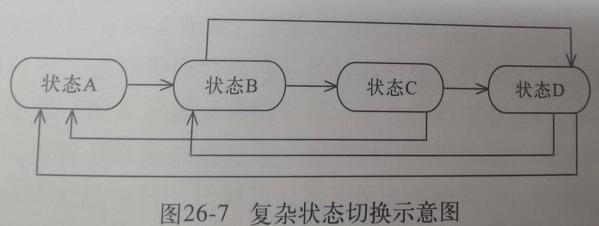

26.状态模式
1.例子引入
情境:搭乘电梯
ILift电梯接口:
定义电梯需要实现的四个动作
Lift电梯实现类:
实现接口定义的动作.
问题:逻辑不对,电梯并不是任何时候都能执行这个动作,有限定的

定义了四个常量来表明当前状态
在Lift电梯实现类中根据当前状态是什么进行逻辑判断能够执行哪些行为
问题:如果逻辑还要增加,这就修改非常复杂

定义了一个LiftState状态抽象类
Context用来负责状态之间的切换逻辑
OpeanningState这些都是具体状态类,需要实现自己的业务逻辑和与Context沟通切换到哪个状态
Client客户就只需要和Context进行沟通,具体的逻辑不用他再负责了

2.正式定义
Allow an objet to alter its behavior when its internal state changes.The object will appear to change its class.
翻译:当一个对象内在状态改变时允许其改变行为,这个对象看起来像改变了其类
State:抽象状态
对象状态的定义,封装环境角色实现状态切换
ConcreteState:具体状态
处理当前状态的业务逻辑,和往哪个状态切换
Context环境角色
客户端需要的接口,负责具体状态切换.
把状态对象声明为静态常量,有几个状态对象就声明几个静态常量.

3.应用和扩展
优点
结构清晰:状态都分开实现了
封装良好:内部状态的变化外部不需要关心了
缺点:子类很多,context逻辑复杂难以修改
适用场景:大范围的swithc或if判断的程序,行为随着状态变化而变化的二维逻辑结构
context的终极形态就是状态机了,负责所有逻辑切换的控制

4.助记小故事
今日小故事:小熊需要设计一个电梯游戏,最初电梯有开门,关门,运行,停止.在电梯上升的过程中,电梯突然打开了,这可把小熊吓坏了,立马修改了程序,让运行的时候不能开门.然后维修师傅小兔又说,它要检测功能,希望能在运行的时候检测,需要开门,没办法又修改了新的逻辑,这样电梯上贴满了一大堆的按钮,非常麻烦,小熊就想还是全部封装到一起,让芯片自己控制,然后就留下开门,关门和楼层就好了,其余都让芯片自己处理,这样就是状态机模式.